直近1週間の人気フィード
はてなブックマーク数を元に新着優先で並べ替え
Zennへのスパム投稿が急増したのでLLMでなんとかした話 141
141 Zenn Tech Blogのフィード
Zenn Tech Blogのフィード
はじめにZennチームの吉川（dyoshikawa）です。2024年6月頃より、Zennにいわゆるスパム投稿が急増したため、LLM（生成AI）を活用してのスパム投稿自動検出の仕組みを構築しました。目的の性質上、あまり詳細については開示できないのですが、技術的な知見の共有のため、そして可能な限りコミュニティへ運営チームの取り組みをオープンにしたいという思いがあり本件の概要を紹介したいと思います。 課題2024年6月頃より、Zennにスパム投稿が急増しました。それに伴いユーザの違反報告が増加したことで我々Zennの運営メンバーも事態を認識することになりました。スパム投稿が読...
3日前
この2年でFirebase Authentication はどう変わった？セキュリティ観点の仕様差分まとめ 133 Flatt Security Blog
はじめに こんにちは、@okazu_dm です。 今回自分がぴざきゃっとさんが2022年4月に書いた以下の記事を更新したため、本記事ではその差分について簡単にまとめました。 Firebase Authentication利用上の注意点に関して生じた差分とは、すなわち「この2年強の間にどのような仕様変更があったか」と同義だと言えます。IDaaSに限らず認証のセキュリティに興味のある方には参考になるコンテンツだと思います。 更新した記事につきましては、以下をご覧ください。 差分について Firebase Authenticationの落とし穴と、その対策を7種類紹介する、というのがオリジナルの記事…
3日前
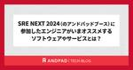
SRE NEXT 2024（のアンドパッドブース）に参加したエンジニアがいまオススメするソフトウェアやサービスとは？ 27 ANDPAD Tech Blog
こんにちは。SREチームの吉澤です。 アンドパッドは、8/3(土)〜4(日)に開催されたSRE NEXT 2024にゴールドスポンサーとして協賛し、企業ブースとスポンサーLTに参加させていただきました！ スポンサーLTでは、SREチームリーダーの角井さんが「アンドパッドのマルチプロダクト戦略を支えるSRE」というタイトルで発表しました。このLTについては、昨日公開された1本目のイベントレポートをぜひご覧ください。 tech.andpad.co.jp 2本目のイベントレポート（この記事）では、アンドパッドブースの様子と、来場者アンケートの集計結果をご紹介します。アンドパッドブースの来場者という範…
14時間前
†ダークローンチ† 41 SmartHR Tech Blog
SmartHR Tech Blog
こんにちは、プログラマのkinoppydです。私の働いているプロダクト基盤チームでは、現在全プロダクト横断従業員検索システムを作成しており、旧システムとのリプレースを行っています。その際に我々が採用した、†ダークローンチ†という手法を皆さんにお伝えしますので、ぜひ参考にしてください。 ダークローンチのイメージ画像です ダークローンチとは？ ダークローンチとは、リリース手法の一つです。すでに稼働しているサービスのトラフィックをコピーして、新たにリリース予定のサービスに対してそのトラフィックを流し、レスポンスを記録しつつ破棄するという形のリリースです。すでに稼働しているサービスから見ると、トラフィ…
2日前
【CTO協会研修記録】 未経験エンジニアがISUCONで圧倒優勝するまでの話 24 PLEX Product Team Blog
はじめに こんにちは、2024年4月に株式会社プレックスに新卒入社した佐藤祐飛です。現在は建設業界向けSaaSプロダクト「サクミル」の開発に携わっています。 2024年7月31日に、日本CTO協会主催の新卒合同研修でISUCON研修が開催され、50万点を超えるスコアで優勝することができました。 CTO協会様主催のISUCON研修優勝しました🏆実はISUCON研修に勝つために2ヶ月間準備していたのですが、その成果が出てよかったです🔥後日、「ISUCON 研修をガチった話」と題してテックブログを投稿する予定なのでそちらもチェックしていただけると嬉しいです‼️#ctoawakate https://…
12時間前
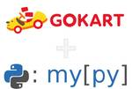
mypy plugin に入門して社内 OSS である gokart を型安全にしてみた 22 エムスリーテックブログ
エムスリーテックブログ
今回は mypy plugin を利用して、型安全に対応していないライブラリを型安全にする方法を紹介します！ 具体的にはエムスリーが開発する機械学習パイプラインツールである gokart を対象とし、mypy plugin を用いてどのように型の課題を解消したかについて解説します。 対象読者としては、既に gokart を使ってくださっている方はもちろんですが、dataclass や Pydantic がどのように型を担保しているかについて興味がある方も想定しています。 github.com gokart について gokart における型の問題 クラス変数をハックするツールである mypy …
13時間前
新Linuxカーネル解読室 - ソケットインターフェース (ソケット生成編) 34 VA Linux エンジニアブログ
VA Linux エンジニアブログ
前回の記事では、データ構造とともにソケット操作処理の流れを見てきました。本稿では、socket(2)システムコールによってこれらの各種データ構造がどのように生成され、関連づけられていくのかを見ていきたいと思います。
2日前
障害への不安をぶっ壊す！カオスエンジニアリングを運用しシステムとチームの耐障害性を高める 31 ZOZO TECH BLOG
ZOZO TECH BLOG
はじめに こんにちは、計測プラットフォーム開発本部SREブロックの山本です。普段はZOZOMATやZOZOGLASSなどの計測技術に関わるシステムの開発、運用に携わっています。 我々のチームは、複数サービスを運用する中で障害対応の経験不足や知見共有の難しさといった課題に直面していました。そこで、半年ほど前にカオスエンジニアリングの導入を開始しました。 本記事では、カオスエンジニアリングを一過性のものではなくチームの文化として根付かせ、継続的な改善サイクルを生み出すための導入から運用まで、我々のチームでの実践から得られた具体的な方法をお伝えします。 これからカオスエンジニアリングを始めようとして…
2日前
React / Remix への依存を最小にするフロントエンド設計 231 一休.com Developers Blog
一休.com Developers Blog
CTO 室の恩田(@takashi_onda)です。 一休レストランのフロントエンドアーキテクトを担当しています。 Intro 一休レストランでは、以前ご紹介したようにフロントエンドで React / Remix を利用しています。 user-first.ikyu.co.jp 一方、設計方針としては、React / Remix への依存が最小になるように心掛けています。 今日は、そんな一見矛盾するような設計方針について、ご紹介したいと思います。 この記事を読んでいただき Remix に興味をもたれたら、明後日 2024/8/7(水) 19:00〜 のオンラインイベント offers-jp.co…
4日前
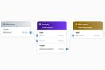
Amazon Bedrock Prompt Flowsで生成AIワークフローをGUIで作成する 26 Taste of Tech Topics
Taste of Tech Topics
はじめに 夏真っ盛りのこの時期、いかがお過ごしでしょうか。日々の暑さに負けない、新人エンジニアの木介です。 今回は、2024年7月にプレビューとして発表された、「Amazon Bedrock Prompt Flows」を利用して、LLMワークフローを構築してみたいと思います。aws.amazon.com はじめに Amazon Bedrock Prompt Flowsとは？ 1. 概要 2. 連携できるサービス 使い方 1. Prompt flow builderによるフローの構築 フローの構築 Prompt flowsの作成 Nodeの設定 2. 作成したフローを試す 3. APIとしてフロ…
1日前
HTTP API Clientライブラリの自作を手助けするGemを公開しました 30 メドピア開発者ブログ
メドピア開発者ブログ
こんにちは。サーバーサイドエンジニアの三村（@t_mimura39）です。 育休明け早々猛暑の熱気にやられ部屋に閉じこもっています。 今回はとあるGemを作成したので、そちらの紹介をさせていただきます。 目次 前フリ Gemの概要 カスタマイズ性について まとめ おまけ 前フリ Webアプリケーションを開発されている皆さん。 外部のHTTP APIを呼び出すような要件が発生したらどのように実装されますか？ まずはHTTP Clientライブラリ（Gem）の選定からですよね。 無難なところでfaraday、最近?だとhttpなんかも選択肢にありますし、Gemを利用せずにRuby標準の Net::…
2日前
AstroとTailwind CSSを使ってDeveloper Siteをリデザインした話 30 TechBlog | Nulab (Japanese)
TechBlog | Nulab (Japanese)
こんにちは！ウェブサイト課の東尾です。 今年の6月にBacklogをはじめとしたヌーラボの各サービスのAPIを紹介するDeveloper Siteのリデザインをリリースしました。同時期にリリースされたJBUG（ジェイバグ […]The post AstroとTailwind CSSを使ってDeveloper Siteをリデザインした話 appeared first on Nulab (Japanese).
3日前
オンプレミスKubernetes環境でのDatadogのデータ欠損を解消した話 17 pixiv inside
pixiv inside
はじめに こんにちは。インフラ部のlyluckです。 この記事ではオンプレミスKubernetesクラスター環境のデータがDatadogへ送りきれず欠損した現象と、その解消方法について紹介します。 背景 ピクシブでは2023年からオンプレミスKubernetesクラスターが稼働し始めました。 徐々にクラスター上で稼働するサービスが増えつつあります。今では10ノードほどの規模のクラスター上で10程度のサービスが稼働しており、常に300台ほどのPodが起動しています。 クラスターやクラスター上のリソースの監視にはDatadogを利用していましたが、時間帯によっては監視データが欠損することが問題にな…
1日前
AWSのDMSやブルー/グリーンデプロイを使ってMySQL8.0へ移行した話 57 BASEプロダクトチームブログ
BASEプロダクトチームブログ
はじめに Data Strategyチーム（以下、DSチーム）でDWHやBIツールの運用をしている@shota.imazekiと不正検知やAWS基盤運用をしている@tawamuraです。 Aurora MySQL v2（MySQL5.7互換）が2024/10/31に標準サポート終了となるため、DSチームでは2024年6月にAurora MySQL v3（MySQL8.0互換）へのアップグレードを実施しました。 その際に得られた課題や知見について紹介していきます。主にAWS DMSやAmazon RDS ブルー/グリーンデプロイを用いたアップグレード方法の話になります。 DSチームのインフラ構成…
4日前
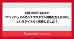
SRE NEXT 2024で「アンドパッドのマルチプロダクト戦略を支えるSRE」というタイトルで発表しました！ 16 ANDPAD Tech Blog
こんにちは。SREチームリーダーの角井です。 アンドパッドは、8/3(土)〜4(日)に開催されたSRE NEXT 2024にゴールドスポンサーとして協賛し、企業ブースとスポンサーLTに参加させていただきました！ スポンサーLTでは、私から「アンドパッドのマルチプロダクト戦略を支えるSRE」というタイトルで発表させていただきました。発表後にはAsk the Speakerの時間があり、それに加えてアンドパッドブースに直接お越しいただいて質問してくださる方もいて、他社のエンジニアと交流できる非常に良い機会になりました。 今回はこのスポンサーLTの内容と、その後のAsk the Speakerなどで…
2日前
バージョンアップ対応に苦労した過去の自分に送りたい7つの心得 25 株式会社ココナラさんのフィード
こんにちは。株式会社ココナラでバックエンド開発に従事するRKと申します。みなさまはシステムのバージョンアップ対応をした経験はありますでしょうか？システムの安定稼働に配慮して一定期間で実施している場合もあれば、利用しているライブラリや開発言語そのものの End Of Life（以降、EOL） によってバージョンアップを余儀なくされて実施した場合もあるでしょう。どちらにせよ、ユーザーの皆様に安心してシステムをご利用いただくためにも、バージョンアップ対応はとても大事な作業の1つとなります。弊社ココナラでも、もう少しでEOLを迎える／迎えた開発言語や環境を持つシステムは存在します。本...
2日前
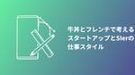
牛丼とフレンチで考える、スタートアップとSIerの仕事スタイル 25 Technology - NRIネットコムBlog
Technology - NRIネットコムBlog
本記事は AWSアワード記念！夏のアドベントカレンダー 22日目の記事です。 🎆🏆 21日目 ▶▶ 本記事 ▶▶ 23日目 🏆🎆 こんにちは、クラウド事業推進部所属の小山です。 暑い日が続きますね、暑いのが苦手な私は夏季休暇中は季節が真逆のオーストラリアに避難することにしました。 コアラに癒されてきます。 この度、2024 Japan AWS All Certifications Engineer に選出いただき、 AWS アワード記念！夏のアドベントカレンダー の 22 日目を担当させていただくことになりました。 今回は自社サービスを提供するスタートアップ企業から SIer に転職した経験か…
3日前
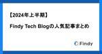
【2024年上半期】Findy Tech Blogの人気記事まとめ 14 Findy Tech Blog
こんにちは。 Findy で Tech Lead をやらせてもらってる戸田です。 2024年の2月末に弊社テックブログを開設してから半年が過ぎようとしています。 今年は上半期だけで31個の記事を投稿しており、テックブログを開設してから6月いっぱいまでで週に1~2記事のペースで投稿できています。 また総PV数は10万PV、はてブ数は1200を超え、多くの方に読んでいただいているようです。いつもありがとうございます！ イベントでお会いした方や、弊社に応募していただき面接でお会いした方からも「テックブログ読んでます！」と言っていただけることが増えてきており、改めて技術広報の重要性を感じています。 そ…
2日前
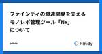
ファインディの爆速開発を支えるモノレポ管理ツール「Nx」について 110 Findy Tech Blog
ファインディ株式会社でフロントエンドのリードをしております 新福(@puku0x)です。 この記事では、ファインディで導入しているモノレポ管理ツール「 Nx 」について紹介します。 モノレポとは Nxとは Nxワークスペースの作成 Nxの機能 コード生成 変更検知 依存関係の管理 キャッシュ機構 自動マイグレーション まとめ モノレポとは モノレポは全てのコードベースを単一のリポジトリで管理する手法です。 monorepo.tools コードの共通化や可視化、ツール・ライブラリの標準化、一貫性のあるCI/CDパイプラインを構築できるといったメリットがあります。また、マイクロサービスと相性が良い…
5日前
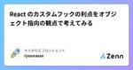
React のカスタムフックの利点をオブジェクト指向の観点で考えてみる 37 サイボウズ フロントエンドのフィード
!この記事は、CYBOZU SUMMER BLOG FES '24 (Frontend Stage) DAY 6 の記事です。こんにちは。ぶっちーです。普段は kintone というプロダクトの新機能開発を行っており、最近は、フロントエンドの技術刷新に取り組んでいます。この技術刷新では、Closure Tools から React への置き換えを行っています。詳しくは、以下の記事をご覧ください。https://blog.cybozu.io/entry/2021/07/20/170000刷新をする中で、React を書いていくうちに React の設計、特に React Ho...
3日前
フロントエンド開発に役立つ Datadog 活用法 87 LegalOn Technologies Engineering Blog
LegalOn Technologies Engineering Blog
はじめに 本記事では、Datadog の設定方法を解説しながら、どのようにフロントエンド開発に活用できるかを話していきます。Datadog とは SaaS 型で提供されている監視サービスです。システムやアプリケーションの監視ができ、収集したログを分析するのに役立つ機能をたくさん提供しています。 こんにちは、株式会社LegalOn Technologiesで Software Engineer（Frontend）をしている山越 ( @yukishinonomeIT ) です。弊社では2024年4月に『LegalOn Cloud』というプロダクトを提供開始しました。Datadog は既存のプロダク…
4日前
エムスリーが難読プログラミングオタクに送るノベルティ、Python Quineクリアファイルの作り方 82 エムスリーテックブログ
早速ですが、こちらに書いてあるソースコード、実際に動くコードとして作成しました。実行結果はどのようになるでしょう？ 答えはこれから各種イベントで配られるノベルティを受け取って打ち込んでみてください！！！ まずはあすから行われるコンピュータビジョンの学会MIRU2024のスポンサーブースで配布します！！！ と、いうのは冗談で、さすがに受け取れたとして打ち込みが大変ですし、以下にソースコードを貼り付けます。 本稿では以下のQuineの作り方について解説していきます。ただし、難読プログラミングが好きな人はまずは解説を読まずに自力で読んでみてください！ exec('''m=lambda_x:exec(…
4日前
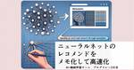
ニューラルネットのレコメンドをメモ化して高速にする 34 エムスリーテックブログ
こんにちは、AI・機械学習チーム(AIチーム)の農見(@rookzeno)です。最近作ったニューラルネットのレコメンドが遅くて困ってました。その時ふと推論してるデータを見ると、これ同じユーザーとアイテムが多発してるなと気づいたので、メモ化をして高速化しました。メモ化して高速化は基礎の基礎ですが、ニューラルネットでやってるのはあまり見ないかなと思ったので、今回はそのやり方について記載します。 DALL-Eでサムネを作成 この記事はエムスリーAI・機械学習チームで2週間連続で行われるブログリレー2日目の記事です。昨日の記事もよろしくお願いします。 www.m3tech.blog 使っているモデルに…
3日前
SRE NEXT2024 登壇&体験記 その２ 10 エムスリーテックブログ
AI・機械学習チームの北川(@kitagry)です。 この記事はAI・機械学習チームブログリレーの記事です。 8/3,4の２日間、SRE NEXT 2024で登壇させていただきました。 こちらで自分の登壇の話しと印象に残ったセッションなどの参加レポートとして紹介します。 また、弊社の後藤もレポートを書いているので良ければこちらもご参照ください。 www.m3tech.blog SRE NEXT登壇の様子 Photo by SRE NEXT Staff
2日前
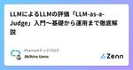
LLMによるLLMの評価「LLM-as-a-Judge」入門〜基礎から運用まで徹底解説 31 PharmaXテックブログのフィード
前回の記事でLLMアプリケーションの評価について基礎から運用まで丁寧に解説いたしました。https://zenn.dev/pharmax/articles/df59290ba875ffこの記事では、評価方法の一部であるLLM-as-a-Judgeについて詳しく解説したいと思います。LLMアプリケーションの評価といえば、LLM-as-a-Judgeだというように結びつける方もいらっしゃいますが、必ずしもそうではありません。というのも、LLMアプリケーションの評価には、LLM以外で評価するLLM-as-a-Judge以外にもいろんな方法や観点があるからです。評価方法や指標について多...
4日前
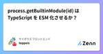
process.getBuiltinModule(id) は TypeScript を ESM 化させるか？ 15 サイボウズ フロントエンドのフィード
!この記事は、CYBOZU SUMMER BLOG FES '24 (Frontend Stage) DAY 7 の記事です。こんにちは teppeis です。普段は開発本部長をやってますが、ブログフェスに駆り出されました！本日は Node v22.3.0 に続いて v20.16.0 にもバックポートされた process.getBuiltinModule(id) について解説します。 問題: 同期的な条件付き require を ESM 化できないNode v22 にて、フラグ付きで CJS (CommonJS Modules) から ESM を require できるよ...
3日前
第27回 画像の認識・理解シンポジウム（MIRU2024）にシルバースポンサーとして参加します！ 14 エムスリーテックブログ
こんにちは！ AI・機械学習チームの氏家（@mowmow1259）です。 エムスリー福岡オフィスの一人目のエンジニアとして福岡で働いています。 本稿はエムスリーAI・機械学習チームで2週間連続で行われるブログリレー3日目の記事となります！ 2日目の記事も是非ご覧ください。 www.m3tech.blog さて、この度、エムスリー株式会社は8/6〜8/9に熊本で開催される第27回 画像の認識・理解シンポジウム（以下、MIRU）にシルバースポンサーとして参加させていただきます！ 皆様の研究発表から刺激を受けるとともに、弊社の臨床画像分野での研究の取り組みをご紹介することで医療分野での実応用の知見な…
3日前
肺動脈性肺高血圧症(PAH)を検出するAIを開発し、論文化しました 26 エムスリーテックブログ
こんにちは、AI・機械学習チーム(AIチーム)の農見(@rookzeno)です。最近、私が開発したAIの論文が公開されたので、今回はそれを紹介をします。 発表された論文はこちらです bmcpulmmed.biomedcentral.com この論文では、 胸部X線 (レントゲン) から肺動脈性肺高血圧症(PAH)を検出するAIを開発しました。 AIと医師を比較した結果、AIの方が医師よりもPAHの検出力が優れていました。 このAIを使うことでのPAHを早期に発見できることが期待されます。 この研究は千葉大学の今井 俊先生、坂尾 誠一郎先生と共同で行い、今井先生に執筆していただきました。ありがと…
4日前
テスト用のオブジェクトを簡単に作れるFactoryJSというライブラリを作った 24 noteエンジニアチーム 公式マガジン
noteエンジニアチーム 公式マガジン
この記事は「TSKaigiサブイベント #1 フロントエンド」にて登壇した内容の文字起こしです TSKaigiサブイベント #1 フロントエンド (2024/08/06 19:00〜)# TSKaigiサブイベント #1 フロントエンド TSKaigiサブイベントは、TypeScriptコミュニティの活typescript-jpc.connpass.com 続きをみる
3日前
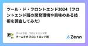
ツール・ド・フロントエンド2024（フロントエンド班の開発環境や興味のある技術を調査してみた） 7 チームラボ フロントエンド班のフィード
こんにちは、チームラボのフロントエンド班に所属している速水です。今回、フロントエンド班内でツール・ド・フロントエンドというイベントを行ったので、その一部を紹介させてください。フロントエンド班の雰囲気が少しでも伝われば幸いです。 ツール・ド・フロントエンドとはフロントエンド班内で、開発環境や生産性の上がるツール、興味のある技術やテーマについて紹介し合うイベントです。2016年からほぼ毎年行われていて、流れとしては、みんなで各テーマに関して自分の使っているツールや技術を下記のようにドキュメント上に記載し、意見を交換していく形です。 調査結果 開発機のOSWindows ...
1日前
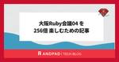
大阪Ruby会議04 を 256倍 楽しむための記事 12 ANDPAD Tech Blog
こんにちは。 id:sezemi です。 実は半生を関西は兵庫県で過ごしていた人間です。 折しも関西で過ごした年数と、東京で過ごした年数が、今年でちょうど同じになりました。 思えば遠くへ来たもんだ。 さて、今回は2024年8月24日(土) に開催される 大阪Ruby会議04 に向けてのアンドパッドの取り組みと、大阪Ruby会議を楽しむための情報をお届けします。 rubykansai.github.io アンドパッドのエンジニアが2名登壇します 大阪Ruby会議04 には、Keynoteスピーカーとして羽角(@hasumikin)、スピーカーとして川原(@makicamel)が登壇します。 11…
3日前
アラフィフ管理職がAWS全冠を目指した理由 6 Technology - NRIネットコムBlog
本記事は AWSアワード記念！夏のアドベントカレンダー 23日目の記事です。 🎆🏆 22日目 ▶▶ 本記事（最終回） 🏆🎆 はじめに NRIネットコムの重本です。当社ブログ初投稿です。 「AWSアワード記念！夏のアドベントカレンダー」のトリを務めさせていただきます。 簡単に自己紹介をさせていただくと、当社に新人として入社後ほぼインフラを担当してきました。 現在は組織を管理・推進する側を担当しています。 オンプレからサーバー仮想化への流れに乗りながら、次のビッグウェーブであるクラウドにも自然と乗った形となります。 この度、「2024 AWS All Certifications Engineer…
2日前
テストエンジニアからQAへ、より高い品質を目指して 3 asoview! Tech Blog
asoview! Tech Blog
こんにちは。QAエンジニアの丸山です。2023年12月にアソビューにジョインし、現在は自社サイトを中心としたQA業務を行っています。 弊社では以前にもQAチームの体制についての記事を公開していました。その中で、”QMファンネルのバランスは必要だが、そのロールに囚われすぎず、本質的な品質改善につながることを意識し実行する、変化にも強いQA実行を目指す”といったことが記載されていました。私が担当するサービスにおける役割がテストエンジニア（TE）だけでなくQAとしての活動を実行する転換期にあたり、その点について具体的な状況や取り組みをご紹介したいと思います。 ▼前回のQAチームの記事 QA体制の過去…
10時間前
ZOZOTOWNのフロントエンド開発にCSS in JSを導入して2年後の状況 37 ZOZO TECH BLOG
ZOZOTOWNのフロントエンド開発にCSS in JSを導入してから2年後の運用状況ついてご紹介します。
5日前
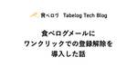
食べログメールにワンクリックでの登録解除を導入した話 35
Tabelog Tech Blog
目次 目次 はじめに 送信者ガイドライン 送信ドメインの認証 迷惑メール率の監視 ワンクリックでの登録解除 設計について 対応方針 配信停止リクエストについて 案 1:自前実装 処理の流れ メリット デメリット 案 2:外部のメール配信システムの機能を利用 処理の流れ メリット デメリット 比較と結論 グルーピングによる一括配信停止 動作検証及びリリース 開発環境での検証 本番検証及びリリース さいごに はじめに こんにちは！ 食べログ開発本部ウェブ開発 1 部に所属している城戸です。 2021 年に新卒入社してから、現在はメディアマネジメントチームに所属しており、 食べログの一般ユーザー向け…
4日前

Next.js App Router / React Server Components(RSC)を紐解いてみた 34estie inside blog
デザインエンジニアの表(@HirokiOmote)です。 Next.jsでApp Routerがリリースされて、1年が過ぎました。 弊社では、@hiroppyさんを技術顧問に迎え、Frontendを中心とした長期的な技術選定にご協力いただきました。 本日は、そこで得た学びをご紹介したいと思います。 App Routerについて 2023年5月にNext.js 13.4がstableとしてリリースされ、App Routerが登場しました。 ツリー構造でのファイル配置が基本となりました。 ディレクトリ構成とルーティング page単位・feature(機能)ごとに切り分けたディレクトリ構成が可能にな…
4日前
Cloudflare D1 を使った日本語の全文検索を実装する 32 サイボウズ フロントエンドのフィード
!この記事は、CYBOZU SUMMER BLOG FES '24 (Frontend Stage) DAY 5 の記事です。最近、SQL アンチパターンという本を読んでいたら、MySQL、 PostgreSQL、SQLite などのデータベースでも拡張機能を利用することで全文検索を実装できることを知りました。[1]SQLite で構築されている Cloudflare D1 についても調べてみたところ、制限はあるものの全文検索の拡張機能が使えるということがわかりました。Export is not supported for virtual tables, including ...
5日前
ソースコードを解析して社内向けUIライブラリの使用状況を自動で集計する 29 PLAID Engineer Blog - 株式会社プレイド
プロダクト全体のソースコードを解析して、提供しているモジュールおよびそれを使用しているプロダクトごとに個別に自動集計する仕組みとその実装方法について解説します。
5日前
仕組みと嬉しさから理解するeslint FlatConfig対応 45
サイボウズ フロントエンドのフィード
!この記事は、CYBOZU SUMMER BLOG FES '24 (Frontend Stage) DAY 3 の記事です。 重い腰を上げて FlatConfig 対応をしたESLint が新しい設定形式として FlatConfig を導入してから随分と経ち、最新バージョンの v9 では FlatConfig がデフォルトになりました。一方で利用者の多い plugin でもなかなか対応が進まず、周りでは思ったよりも FlatConfig への移行が進んでいない印象を受けます。とはいえ次のバージョンである v10 では FlatConfig しかサポートしないことが予定されて...
6日前
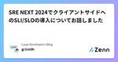
SRE NEXT 2024でクライアントサイドへのSLI/SLOの導入についてお話しました 3 Luup Developers Blogのフィード
はじめにLuupのSREチームに所属している、ぐりもお（@gr1m0h）です。日本最大のSREカンファレンス SRE NEXT 2024 に登壇しました。このカンファレンスはSRE Loungeの運営メンバーが主体となって運営しており、今回で4回目の開催です。私の登壇の題は「Enabling Client-side SLO」です。これまでの「Enabling SLO」の活動の一環として、クライアントサイド（iOS・Android）のSLOのを計測し始めた話を共有しました。「Enabling SLO」とは、各開発チームがSREを実践し、SLI/SLOを自律的に設計・実装・運用でき...
2日前
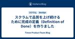
スクラムで品質を上げ続けるために完成の定義（Definition of Done）を作りました 23 Timee Product Team Blog
読んで欲しいと思っている人 POやステークホルダーと品質について共通言語や目標が欲しい開発者 開発者と品質について共通言語や目標が欲しいPO スクラムで品質について困っている人 読むとわかること 完成の定義（Definition of Done）とはどんなものか スクラムと非機能的な品質の関係性 タイミーのWorkingRelationsSquadでどんな完成の定義を作り、活用していきたいと思っているか
5日前
SRE NEXT 2024 登壇&参加レポート その1 22 エムスリーテックブログ
こんにちは、SREチームの後藤です。 8月3日と4日の2日間、Abema Towersで開催されたSRE NEXT 2024にて登壇させて頂きました。 こちらに、自身の登壇についての話と印象に残ったセッションなど参加レポートとしてご紹介させて頂きます。 正答率80%でギリギリゲットした信頼性カレー
4日前
builderscon 2024 プロポーザルが採択されるまで 8 inSmartBank
inSmartBank
はじめに こんにちは。サーバーサイドエンジニアの mokuo です。 2024/08/10 に開催される builderscon 2024 にプロポーザルを提出し、採択していただきました 🎉🎉🎉 fortee.jp 先日 タイムテーブル も公開されまして、なんとトップバッターを務めることになりました 🙄 私の次の枠では、弊社の 三谷 も登壇します。詳しくは以下の記事をご覧ください。 blog.smartbank.co.jp そして、私自身はテックイベントでの登壇経験はありましたが、プロポーザルを提出するのは初めての経験でした。プロポーザルを下書きした後、社内のエンジニアにレビューいただき、何度…
3日前
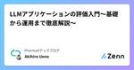
LLMアプリケーションの評価入門〜基礎から運用まで徹底解説〜 18 PharmaXテックブログのフィード
こんにちは。PharmaXの上野です。今回はLLMアプリケーションを評価する上で知っておくべき評価の基本をきちんと整理したいと思います。これまで何度かLLMアプリケーションの評価について語ってきました。https://yojo.connpass.com/event/305679/https://studyco.connpass.com/event/324522/運用についても記事や発表の形でシェアを行ってきました。https://zenn.dev/pharmax/articles/48ee897438f0e7ですが、まだまだ「評価とはなにか？」という基本的なところで躓いてし...
5日前
期待情報利得計算の変分ベイズ法の適用について 18 Insight Edge Tech Blog
Insight Edge Tech Blog
こんにちは、InsightEdgeでデータ分析をしている新見です。今日はUberAIからNeurIPS2019に出た論文を紹介します。この論文では、ベイズ最適実験計画（Bayesian Optimal Experimental Design：BOED）における期待情報利得（Expected Information Gain：EIG）の推定を高速かつ正確に行う新しい手法を提案しています。
5日前
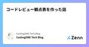
コードレビュー観点表を作った話 3 CastingONE Tech Blogのフィード
はじめに今回は、コードレビュー観点表を作った話について少し書かせていただきます。社内ではGitHubを用いてコードレビューを行っていて、バックエンドの開発においては、コーディングガイドラインも策定しています。しかし開発において、ガイドラインに書かれている事項が全てではないため、コードレビューを行う際のポイントが自分の中で綺麗に整理しきれていませんでした。また、ガイドラインの重要なポイントを十分に把握できず、効果的なコードレビューができていない現状がありました。これを改善するために、コードレビューの観点表を作成したことで、コードレビューの質が上がった話についてお話ししようと思い...
2日前
AI に仕事を奪われそうなので、一周まわって人間が FizzBuzz する 3キカガクブログ
こんにちは、キカガクでエンジニアをしている高橋です！ 近ごろ、生成 AI の進化が凄まじくプログラミングのコードを生成してもらうことが増えてきました。人間がコードを書かなくなる時代が本当にくるんだろうなと実感しています。 ...
2日前
構造化ログと実装 -Goのslogによる実践- 3 Cybozu Inside Out | サイボウズエンジニアのブログ
Cybozu Inside Out | サイボウズエンジニアのブログ
この記事は、CYBOZU SUMMER BLOG FES '24 (クラウド基盤本部 Stage) DAY 4の記事です。 クラウド基盤本部Cloud Platform部の pddg です。cybozu.comのインフラ基盤移行まだまだがんばっています。 今回の記事は、社内向けに書いていた「構造化ログとは何か・Goのslogパッケージをどう使うべきか」という話を一般向けに書き直したものです。なんとなくslogを使っているという状態から、チームでどのようにログを取るべきか方針を決められるようになるくらいの状態に持っていくための一助になればと思います。 背景 構造化ログに求められるもの 機械的に読…
3日前
SRE NEXT 2024に登壇しました 4 Pepabo Tech Portal
Pepabo Tech Portal
技術部プラットフォームグループのyuchiです。2024年8月3日,4日の2日間にわたって開催されたSRE NEXT 2024に登壇をしたので簡単に発表内容と感想を書いていきます。「SREが考えるハイブリッド開催の技術イベントのライブ配信における信頼性」2日目のBトラックのラストで「SREが考えるハイブリッド開催の技術イベントのライブ配信における信頼性」というタイトルで発表しました。登壇中の写真 Photo by SRE NEXT Staffハイブリッド開催の技術イベントが増えている昨今、ペパボでも「SREまつり」シリーズというハイブリッド開催の技術イベントを開催しています。このようなライブ配信を行ってきた経験から得たトラブルや大変さなどを「信頼性」や「可用性」を軸とした改善を行ってきた話を行いました。SRE NEXTなので、ライブ配信技術に詳しい方は多くないと考えて資料内容や発表内容は少し工夫を行いました。例として「今までの配信ソフトで見れていたステータス表示はtopコマンド、新たなステータス表示はGrafanaのようなメトリクスツールに変わった」や、「使用
3日前
Google Cloud に機械学習 API をデプロイするとき、Cloud Run と Vertex AI Endpoint のどちらを選ぶべきか？ 3 Commune Engineer Blog
こんにちは。2024年6月に中途入社した機械学習エンジニアの深澤(@fukkaa1225)です。新しいエキサイティングな環境を毎日楽しんでます！ 本記事では機械学習 API をデプロイする際、コストの観点からどのようなサービスを選ぶべきかについて述べたいと思います。
3日前
オンプレミス Windows Server を AWS Systems Manager 管理下にする 3 Technology - NRIネットコムBlog
本記事は AWSアワード記念！夏のアドベントカレンダー 21日目の記事です。 🎆🏆 20日目 ▶▶ 本記事 ▶▶ 22日目 🏆🎆 こんにちは、クラウド事業推進部所属の今村です。 今年の夏も暑い日が続いておりますが、暑さに負けずゴルフを頑張っております。 最近はナイターゴルフに興味津々です。 この度、2024 Japan AWS All Certifications Engineer に選出いただき、 AWSアワード記念！夏のアドベントカレンダー の21日目を担当させていただくことになりました。 今回はオンプレミス Windows Server に AWS Systems Manager エージ…
4日前
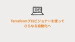
Terraformプロビジョナーを使って、さらなる自動化へ 7 Technology - NRIネットコムBlog
本記事は AWSアワード記念！夏のアドベントカレンダー 20日目の記事です。 🎆🏆 19日目 ▶▶ 本記事 ▶▶ 21日目 🏆🎆 こんにちは後藤です。 この度、2024 AWS All Certifications Engineersに選出していただきました。次回も選出されるように日々努力を続けていきます。 私が書いた記事を振り返ってみると、気づけばTerraformの記事ばかりになっていました。 以前に「Terraformはこんなこともできるのか」シリーズを書いたのですが、今回も「Terraformはこんなこともできるのか」系のお話です。 tech.nri-net.com 紹介したいのは「T…
5日前
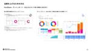
数字を意識せよ! 数字を見る as 品質を実現している話 3 LayerX エンジニアブログ
LayerX エンジニアブログ
自己紹介 LayerX Fintech事業部のきむ(@jkcomment)です。 現在はFintech事業部にて、デジタル証券で資産運用ができる個人向け投資サービス「ALTERNA（オルタナ）」を開発しています。 最近ランニングを始めました。 10月に大会出る予定ですが、暑すぎてお家でYoutubeで走る映像を観ています。 ALTERNAチームではALTERNAの開発とデータ基盤開発をメインとしてきましたが、 ALTERNAチームが品質を上げるために普段やっていることについてご紹介したいと思います。 数字を見ながら話しませんか？ ALTERNAチームでは実装や設計もそうですが、プロダクトの品質…
4日前
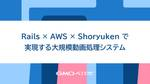
Rails × AWS × Shoryukenで実現する大規模動画処理システム 3 Pepabo Tech Portal
はじめにセキュアなアップロードとS3の活用 1. S3バケットの作成と設定2. 署名付きURLの生成3. クライアントサイドの実装ShoryukenとSQSによる非同期ジョブ処理 1. Shoryukenとは2. セキュリティスキャンワーカーの実装3. 動画変換ワーカーの実装4. エラーハンドリングLambdaによるワークフロー制御まとめと今後の展望はじめにこんにちは！GMOペパボでエンジニアをしている@yumuです。近年、動画コンテンツの重要性は急速に高まっており、多くのウェブサービスやアプリケーションで動画のアップロードと共有が一般的になっています。しかし、動画ファイルの取り扱いには、セキュリティ、ファイルサイズ、形式の互換性など、さまざまな技術的課題があります。今回、私はハンドメイドECサービス「minne」において、作家が作品に関する動画をアップロードできる機能を開発しました。アップロードされた動画を効率よく配信するためには、動画を適切なフォーマットに変換・圧縮する必要があります。。動画処理システムを実装するにあたり、AWSの各種サービスとRuby用のバックグラウンドジョブフレ
5日前